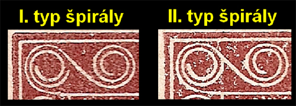
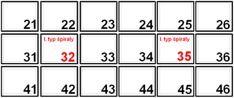
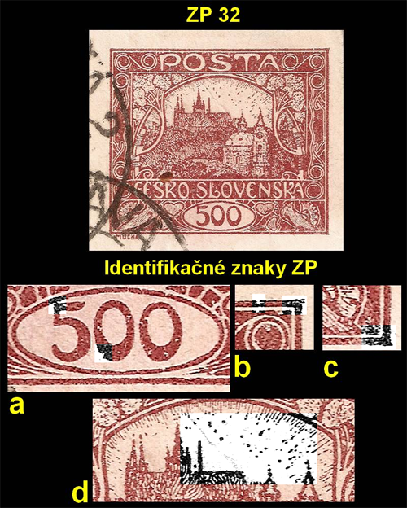
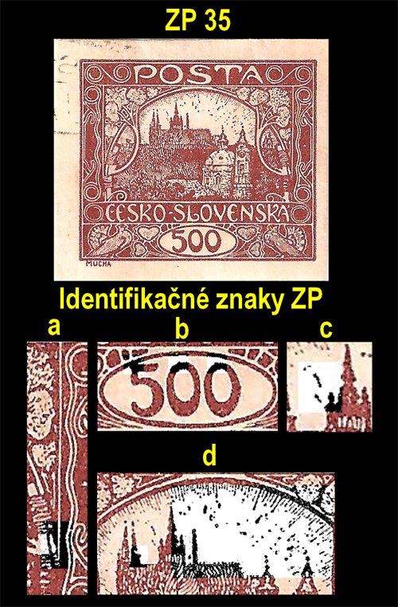
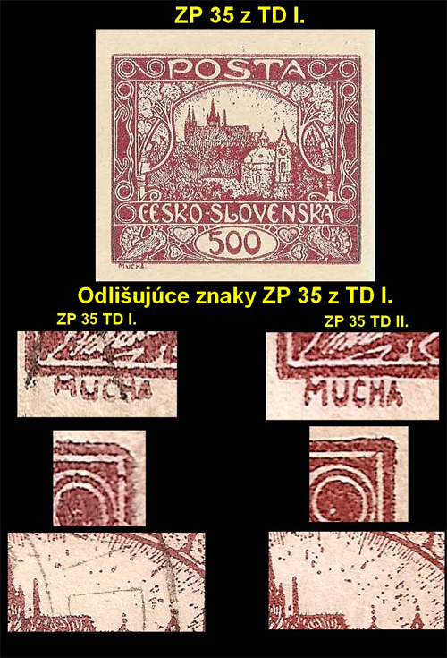
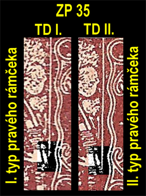

500h – identification des timbres au type I de la spirale de la planche II
L’impulsion de cet article a été le fait que, au cours des dernières années, j’ai rencontré à plusieurs reprises dans les bourses des timbres de la valeur 500 hellers au type I de la spirale mal déterminés, qui devaient, selon la description déclarée, provenir de la planche II. La littérature spécialisée fait défaut et, même dans les sources disponibles, les illustrations sont imprécises, ce qui complique l’identification. L’article a pour but d’apporter aux collectionneurs une information complète permettant la détermination exacte des positions au type I de la spirale de la valeur 500 hellers provenant de la planche II.
Quelques faits pour commencer
Dans la distinction typologique de base de la plupart des timbres du Ve dessin, on rencontre des timbres à deux types de spirale – concrètement pour les valeurs 5 h vert-bleu, 15 h rouge brique, 25 h violet, 75 h vert-gris et 500 h brun.

Sur certaines planches d’impression, les deux types de spirale se rencontrent simultanément et forment, dans les bandes ou les blocs, ce que l’on appelle les types de spirale réunis (STs). La valeur 500 h a été imprimée à partir de deux planches d’impression. Alors que les 100 timbres de la planche I ont tous le type I de la spirale, sur la planche II 98 timbres ont le type II de la spirale et 2 timbres seulement sont du type I – aux positions 32 et 35 :

Les timbres oblitérés du type I provenant de la planche I comptent parmi les timbres courants. Les timbres au type I de la spirale provenant de la planche II ont une cote bien plus élevée ; les timbres neufs font l’objet de ventes aux enchères.
Signes d’identification de la position 32 (planche II)

- a) le coin supérieur du chiffre 5 touche le bord du cartouche de valeur ; dans la partie inférieure du premier zéro, une entaille en forme de coin
- b) une entaille dans le cadre au-dessus de la spirale d’angle supérieure droite, coin supérieur droit saillant
- c) coin supérieur gauche saillant
- d) groupement caractéristique de points au-dessus de la cathédrale
Signes d’identification de la position 35 (planche II)

- a) type II du cadre de droite (le cadre déborde dans l’entrelacs)
- b) le coin supérieur du chiffre 5 touche le bord du cartouche de valeur avec une déformation caractéristique
- c) les deux zéros présentent, dans leur partie supérieure, des excroissances colorées
- d) du côté gauche de la troisième tour, deux rayons superposés avec deux points au-dessus du rayon supérieur ; une entaille dans la deuxième tour du côté droit ; groupement caractéristique de points au-dessus de la cathédrale
La planche II a été fabriquée à partir des mêmes documents de base que la planche I ; c’est pourquoi certains signes de contrôle de la position 35 coïncident sur les timbres de la planche I et de la planche II. Il arrive qu’un timbre de la position 35 provenant de la planche I soit déterminé par erreur comme un timbre de la planche II.

L’identification de la position 35 de la planche II est pourtant simple : si l’on trouve une concordance entre l’illustration et le timbre examiné, il suffit de contrôler le type du cadre de droite. Le timbre de la planche I l’a du type I (le cadre n’atteint pas l’entrelacs), le timbre de la planche II du type II (le cadre déborde dans l’entrelacs).

| Position 35, planche I | Position 35, planche II |
|---|---|
| Cadre de droite du type I (le cadre n’atteint pas l’entrelacs) | Cadre de droite du type II (le cadre déborde dans l’entrelacs) |
| La lettre M de MUCHA a les jambages plus courts, la lettre A le jambage gauche plus court | MUCHA sans dommages ni déformations apparents |
| Coin supérieur droit du timbre émoussé (biseauté) | Coin supérieur droit sans biseau, légèrement déformé |
| Groupement de points au-dessus de la cathédrale différent | Groupement de points au-dessus de la cathédrale caractéristique de cette position |
Même ces éléments n’excluent pas qu’il soit toujours préférable de soumettre ses trouvailles aux experts de la fédération.
Littérature utilisée : Karásek – Hradčany (1986) · Hamr, Škaloud – Rukověť pro sběratele Hradčan (1998) · www.knihtisk.org